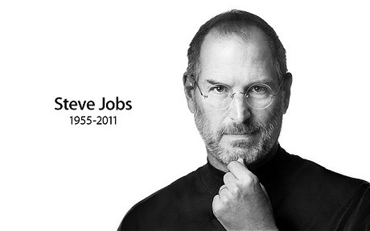

Connect the dots

“You can't connect the dots looking forward; you can only connect them looking backwards. So you have to trust that the dots will somehow connect in your future.”

Discussion
Quelles peuvent être les influences négatives et positives des évènements de la vie de Steve Jobs ?
Quelles compétences a-t-il pu developper en consesquence de ses evenements?
Regardez la vidéo du discours de Steve Jobs à Stanford.
Cherchez d'autres exemples de parcours de vie comportant des ruptures dont la personne a tiré des consequences positives.